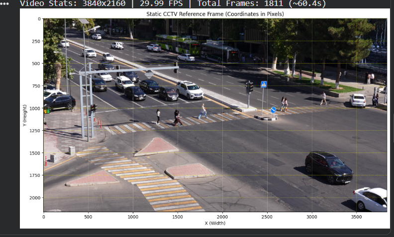
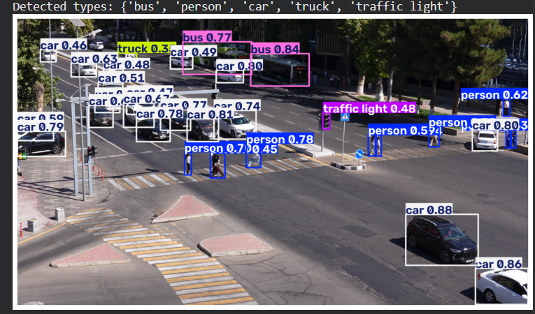
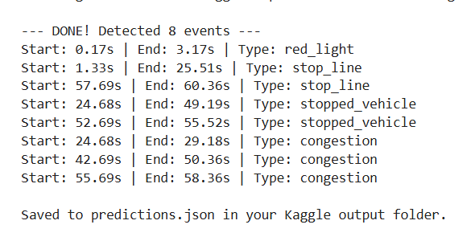
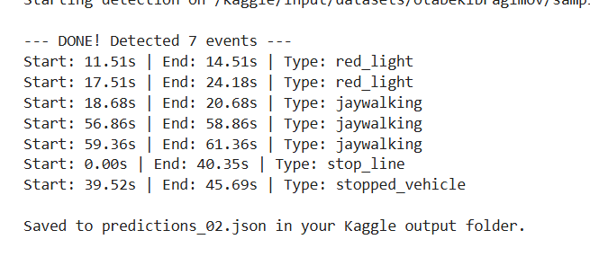

YOLO11m detection + tracking, combined with hand-drawn zone geometry and signal-state logic, turns raw footage into a timestamped list of the 14 official event types. Part A only — see the Report section for why.
No trained accident classifier — a detector + tracker feeds hand-written, camera-specific rules.
Only object detection and tracking — Ultralytics YOLO11m, COCO-pretrained, open weights. No training was run for this task.
Every event definition: hand-drawn zone polygons for this camera's exact framing, trajectory thresholds, box-overlap ratios, and an HSV pixel-crop read of the traffic signal.
Physics-based, not learned: per-frame accident risk from Time-To-Collision and Closest-Point-of-Approach between tracked object pairs, over a tightened 2-second horizon.

We took the first frame of the video to define some areas and intersections based on that

We used YOLO's vison to recognise people and cars (built-in classes)

We tested our model on the 1st minute of video 1

Tasted results of 2nd minute of same video as well
Upload an .mp4 (≤2 minutes recommended) — CPU inference, so expect it to take a minute or two.
A stateful stop-line stopwatch that tracks how long a vehicle sits on the line during red, momentum and jitter filters that separate real red-light entries and collisions from tracker wiggle, and a geometric + temporal filter that keeps shadows and debris from firing false jaywalking events.
Naive 2D vector-crossing for risk estimation badly over-triggered, since a camera's perspective makes parallel lanes look like they converge. A 5-second TTC horizon also saturated the risk graph near 1.0 for nearly the whole video. Fixed with proper CPA math, a lane-width separation filter, and tightening the horizon to 2 seconds. illegal_turn, solid_line_crossing, road_obstacle and fire_smoke are not implemented yet.
Add the missing classes, replace the fixed zone polygons with a homography so the pipeline survives a resolution/crop change, and keep tuning how often Part B re-runs detection per frame against the shared time budget.